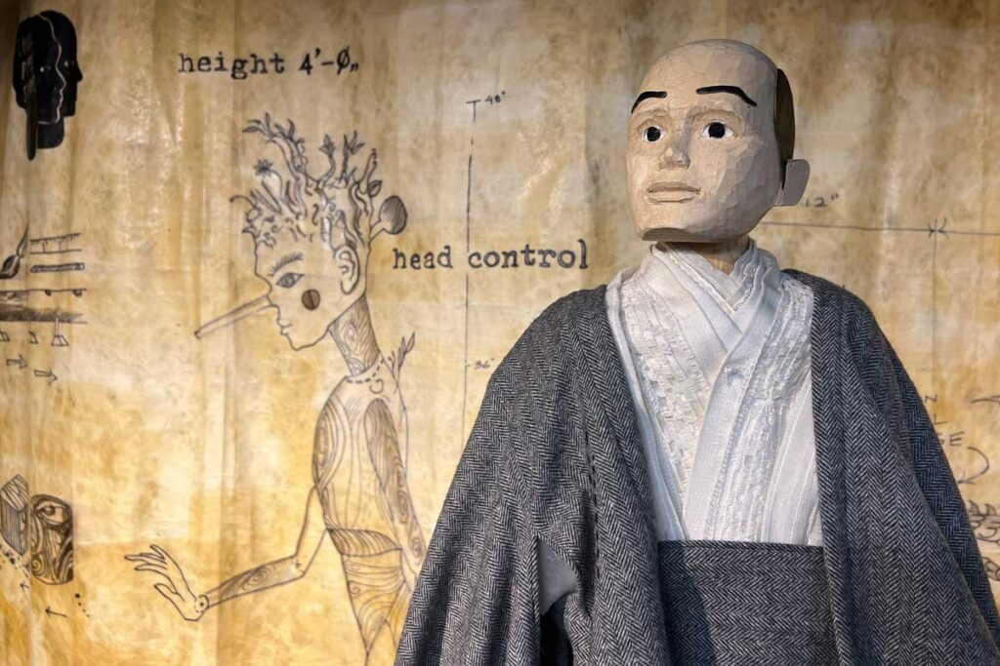

Spring 2026 Puppetry Workshop: Puppet Design Strategies (Level 1)
Puppet Design Strategies (Level 1) with Tom Lee
This in-person workshop taught by Chicago Puppet Studio Co-Director Tom Lee focuses on bringing puppet and theater designs into workable reality. Tom will showcase examples from his professional practice including designs, processes, sketches, storyboards and prototypes. Students will be asked to prepare a one-page description with images of a proposed design or project for the workshop and receive feedback and advice. This workshop aims to encourage an artist’s personal approach to the design process.
Instructor:
Tom Lee
Date/Time:
Sunday, May 3
10 a.m. – 1 p.m. Central Time
Location: